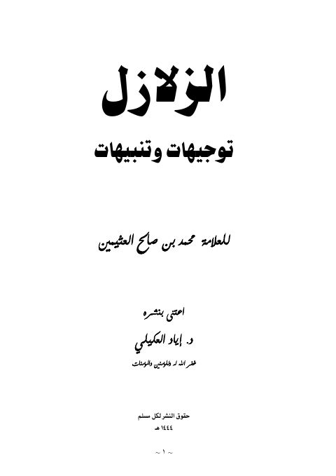

Downloads need an internet connection.
الزلازل توجيهات وتنبيهات
Authors: محمد بن صالح العثيمين
Editors: إياد العكيلي
**▫️ العنوان: الزلازل توجيهات وتنبيهات** ▪️ المؤلف: #محمد_بن_صالح_العثيمين ▫️ المحقق: #إياد_العكيلي ▪️ تاريخ النشر: 1444هـ 2023م ▫️ الطبعة: 2 ▪️ عدد الأجزاء: 1 ▫️ الصفحات: 93 ▪️ نوع الوعاء: #كتاب ▫️ التصنيف الرئيسي: #الزهد_والرقائق ۪